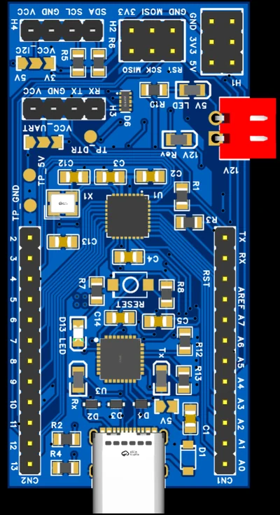
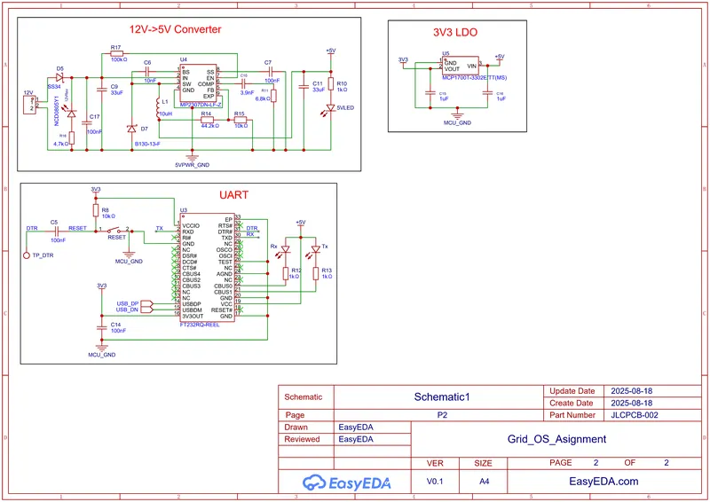
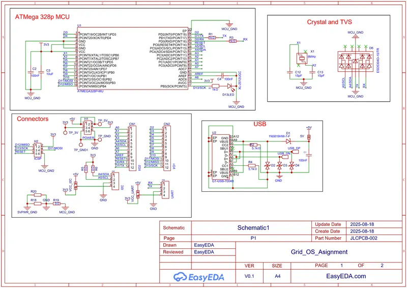
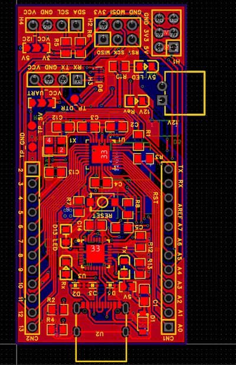
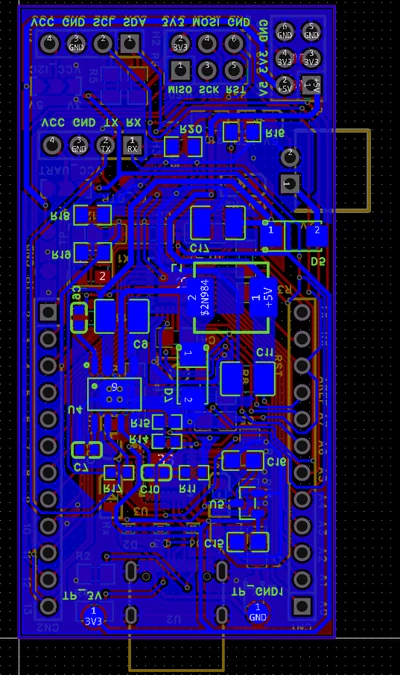
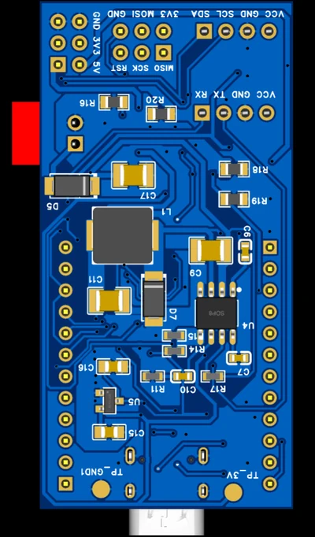

U7 · Personal board
Arduino Nano — 12 V Input
A pin-compatible Arduino Nano rebuilt for industrial supplies: 12 V input through a switching pre-regulator, USB-C with ESD protection on the data lines, and debug headers actually brought out.

Why rebuild a Nano
A stock Arduino Nano regulates its input with a linear regulator. Feed it 12 V — which is what an industrial or automotive supply gives you — and the regulator burns the difference as heat, which limits what the rest of the board can draw before it shuts down.
I kept the Nano pinout so existing shields and code still work, and replaced the front end.
What I changed
A buck converter takes 12 V to 5 V, and an LDO derives 3.3 V from that, so the analogue rail isn't carrying switching ripple directly.
USB-C instead of mini-B, with ESD protection on the data lines — that's the failure mode that actually kills development boards on a busy bench. Beyond the standard headers I brought out separate UART, I²C and ICSP, which sounds minor until you're trying to get a logic analyser onto a bus buried under a shield.
Gallery




